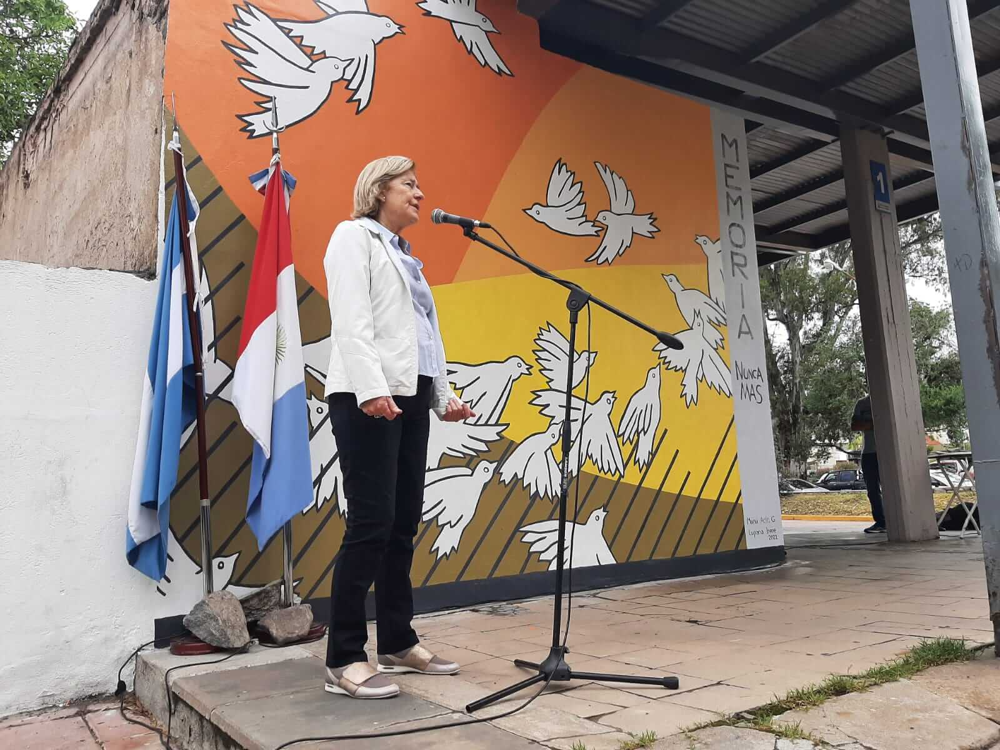

Memoria por la Verdad y la Justicia Adolfo Alsina
Publicaciones
"Historietas por la Identidad"
Publicado en conjunto por la Biblioteca Nacional y Abuelas, el libro tiene el objetivo de seguir difundiendo la búsqueda de los niños nacidos durante el cautiverio de sus madres, apropiados ilegalmente y privados de su identidad.Se trata de historietas realizadas con la colaboración de diversos dibujantes, ilustradores y guionistas. En su mayoría, refieren a una historia concreta y están relatadas desde la voz de un hermano o una hermana que busca.
Descargar
"El papel del sistema de justicia frente a violaciones masivas a los derechos humanos. Problemáticas actuales"
Este libro contiene las exposiciones del seminario "El papel del sistema de justicia frente a violaciones masivas a los derechos humanos. Problemáticas actuales", organizado en 2008 por el equipo jurídico de Abuelas con el apoyo del País Vasco y el auspicio del Departamento de Derecho Penal y Criminología de la Facultad de Derecho de la UBA.
Descargar
"Las Abuelas y la genética. El aporte de la ciencia en la búsqueda de los chicos desaparecidos"
El libro reconstruye el camino que transitaron las Abuelas para lograr identificar a sus nietos y nietas, desde su demanda a los científicos para conseguir la formulación de un "índice de abuelidad" hasta la creación del Banco Nacional de Datos Genéticos, pionero en el mundo.
Descargar
Esculturas y Pinturas
El Panuelo de la Memoria de Santiago Cariac
Murales varios
Aqui podran acceder a distintas manifestaciones en formato mural. En especial, recomendamos apreciar ""Orizzonti Di Speranze", realizado en Italia por la artista local Munu Actis Goretta. La imagen que acompana esta entrada muestra el mural que la artista realizo en la terminal de omnibus de la cumbrecita, Cordoba, Argentina (ACCEDER)
{kind=link}
Audios y Canciones
La Memoria- Leon Gieco
Huesos- Pedro Guerra
Los Dinosaurios- Charly Garcia
Podcast de Spotify "Memoria, Verdad y Justicia"
En esta play list podras acceder a 55 creaciones musicales relacionadas con la Memoria